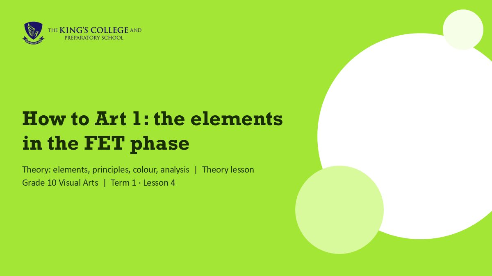

Term 1 · Lesson 4 · Theory lesson
How to Art 1: the elements in the FET phase
Start here
Today I will
- Use the FET formula: identify, describe and explain the effect
- Recognise line, shape, form and tone in artworks
- Write full formula sentences about three artworks
Think first
'There are lines in this painting.' True, but why would that sentence earn almost no marks?
Words to Know
| Word | Meaning |
|---|---|
| Identify | Name the element using the correct art term. |
| Describe | Say where the element is in the artwork and what it looks like. |
| Effect | Explain what the element does for the artwork or how it makes the viewer feel or look. |
| Line | A mark longer than it is wide, made by a moving point; it can also be implied. |
| Shape and form | A shape is flat (height and width); a form is three-dimensional or looks it (height, width and depth). |
| Tone | How light or dark a colour or grey is; also called value. |
Slides

Videos
Notes
The FET formula for every element: identify it, describe it and explain its effect. Line, shape, form and tone (value) with artwork examples.
The FET formula
- Identify: Name the element: 'line'.
- Describe: Point to it: 'thick, curving, swirling lines fill the night sky'.
- Effect: Explain it: 'they create a restless rhythm, so the sky seems alive and full of energy'.
Four elements at FET level
- Line: Edge, outline, geometric or organic. Diagonals suggest movement; verticals suggest height and strength; implied lines guide the eye.
- Shape: Flat areas, geometric or organic. Geometric shapes feel ordered; organic shapes feel natural and alive.
- Form: Actual in sculpture, illusionary in painting. Modelling with tone makes a flat shape look solid, as in the Mona Lisa.
- Tone: Light to dark. Strong contrast creates drama and a focal point, as in Caravaggio's beam of light.
Remember
Name it, point to it, say what it does.
Practical
You need: Theory booklet, visual journal
Identification exercise
- Head a VJ page 'The FET formula' and write the three steps as a key.
- Artwork 1, The Starry Night: write one formula sentence about line.
- Artwork 2, the Mona Lisa: write one formula sentence about form.
- Artwork 3, The Calling of Saint Matthew: write one formula sentence about tone.
- Underline the identify, describe and effect parts of each sentence in three colours.
- Swap with your partner and check that every sentence has all three parts.
Test yourself
- What are the three steps of the FET formula?
- What is the difference between shape and form?
- Give one effect of strong tonal contrast.
Show answers
1. Identify, describe, effect. 2. A shape is flat with height and width; a form has depth or looks three-dimensional. 3. It creates drama or draws the eye to a focal point.
Finished early?
One more formula sentence
Practise the FET formula on an element you did not use in class.
- Choose one of the three artworks from today's lesson in your Theory booklet.
- Pick an element you have not written about yet, such as shape or line.
- Write one FET formula sentence: identify it, describe where and how it is used, and explain its effect.
- Underline the three parts in three colours and check that the effect is clear.